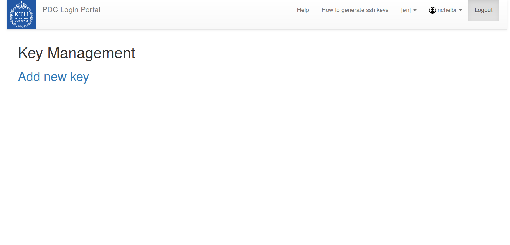
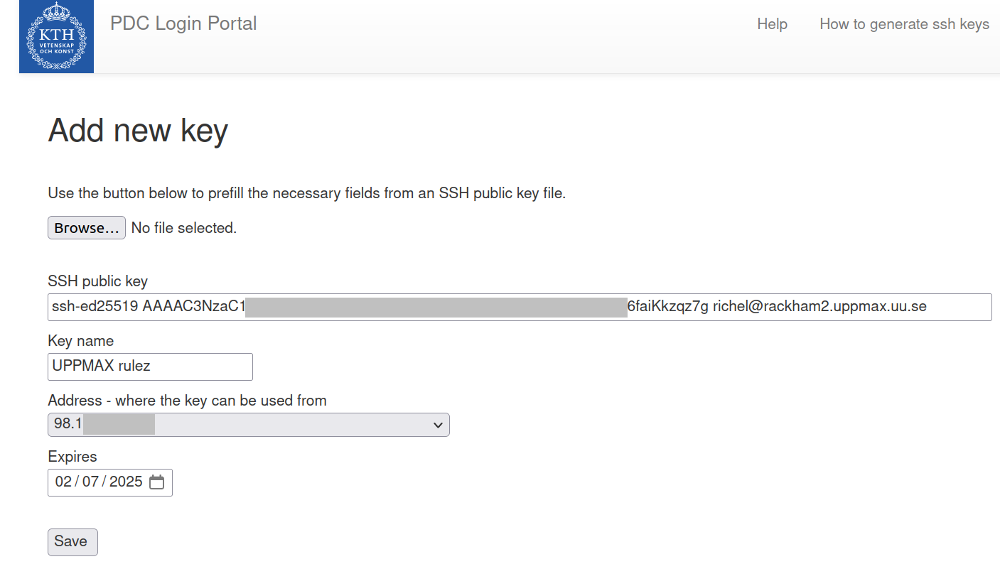
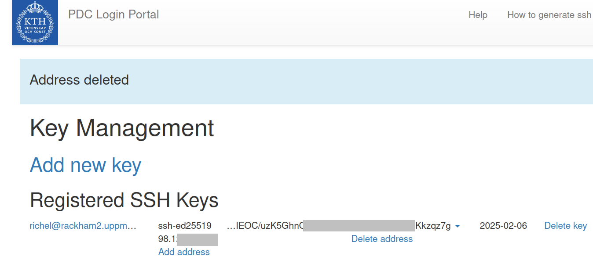
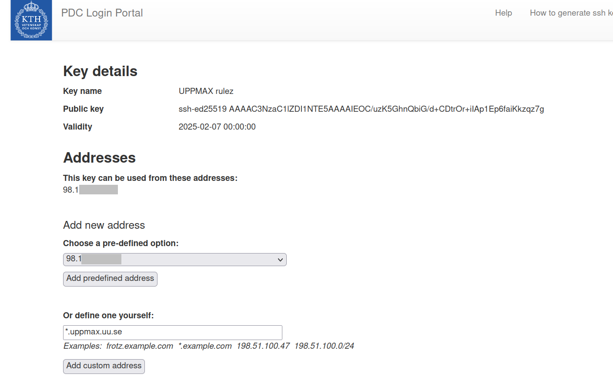
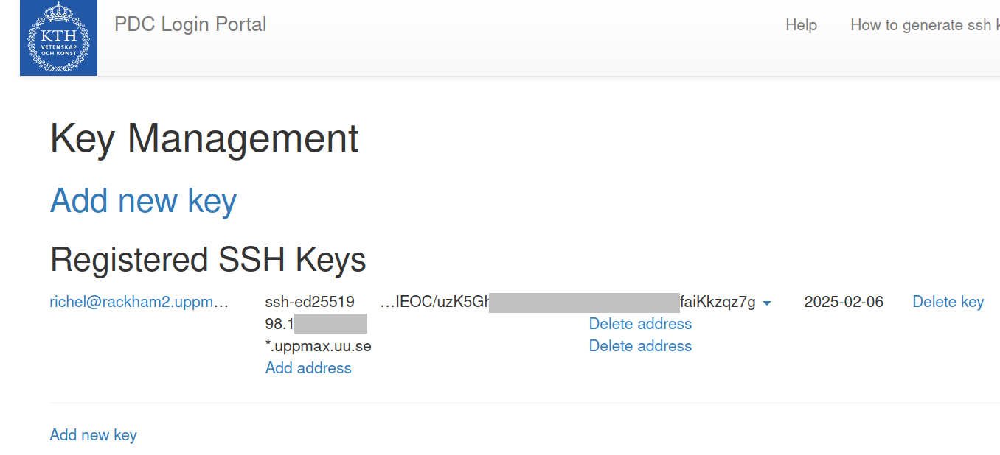

Create and use an SSH key pair for Dardel¶
This page describes how to create and use an SSH key for the Dardel cluster.
This guide will show you:
This makes it possible for you to login to Dardel.
PDC has a more comprehensive guide on how to do this on various operating systems if you want a more in-depth guide.
1. How to create SSH keys¶
To create an SSH key, one needs to
- start generating the key
- specify the filename
- specify the password
1.1 Start generating the key¶
- Add the content of your public key `id_ed25To create a SSH key, run the following command:
This will start the creating of a SSH key using the ed25519 algorithm.
1.2 Specify where to save the file¶
The program will ask you where to save the file,
user@rackham ~ $ ssh-keygen -t ed25519
Generating public/private ed25519 key pair.
Enter file in which to save the key (/home/user/.ssh/id_ed25519):
If you press enter it will save the new key using the suggested name, /home/user/.ssh/id_ed25519
If it asks you if you want to overwrite,
you probably want to press n
since you already have one created
and might want to use that one instead.
If you overwrite it you will lose access to wherever the old key file is used,
so just run the ssh-keygen command above again and type in a new name for the file.
1.3 Specify the password¶
The next step is to add a password to your key file. This makes sure that even if someone manages to copy your key they will not be able to use it without the password you set here. Type in a password you will remember, press enter, type it in again and press enter.
The key will now be created and you can add it to the PDC Login Portal.
How does this look like?
This is output similar to what you will see:
Your identification has been saved in /home/user/.ssh/id_ed25519
Your public key has been saved in /home/user/.ssh/id_ed25519.pub
The key fingerprint is:
SHA256:g+rvY4HoDNlim+Bj43L3pxr56hrlwC4hzPa/yE/2YqE user@rackham
The keys randomart image is:
+--[ED25519 256]--+
|.o |
|o . |
| . = . |
| B .. |
| + * B..S |
|= + o = |
|*+.oo=.. |
|+=oE+ B |
| o +*X o |
+----[SHA256]-----+
2. How to add an SSH key to the PDC Login Portal¶
To add an SSH key to the PDC login portal, one needs to:
- Open the PDC login portal
- Start adding a new key
- Actually adding that public key
- Allow the key to be used from UPPMAX
2.1. Open the PDC login portal¶
Go to the PDC Login Portal
How does that look like?
That will look like this:

Example PDC login portal without any SSH keys yet. We will need to add an SSH key that allows access from UPPMAX to PDC
2.2. Start adding a new key¶
Click the Add new key link:
How does adding an SSH key pair look like?
That will look like this:

Example of the first step of adding an SSH key pair to the PDC portal. The 'SSH public key' is copy-pasted from
cat ~/id_ed25519_pdc.pubon Rackham. The 'Key name' can be chosen freely. Note that this SSH key cannot be used yet for UPPMAX, as it only allows one IP address.
How does it look like when the key is added?
That will look like this:

Example PDC login portal with one key. Note that the second column only has one IP address and is still missing
*.uppmax.uu.se.
2.3. Actually adding the public key¶
Here you can either upload the public part of the key file you created before, or you can enter the information manually.
Forgot where the key was?
Here is how to the display the SSH public key content at the default location:
Else, the SSH keys are where you created them in step 1.2 :-)
How does the content of a public SSH key look like?
When displaying the content of a public SSH key, it will show text like this:
Copy the content of the SSH public key.
Paste it into the field SSH public key,
make up a name for the key so you know which computer it is on
and fill it into the field Key name.
2.4. Allow the key to be used from UPPMAX¶
Once you have added you key you have to
add UPPMAX as allowed to use the key.
Click on Add address for it and add *.uppmax.uu.se.
Address specifies which IP address(es)
are allowed to use this key
and the field is prefilled with the IP of the computer you are on at the moment.
How does it look like to edit an SSH key so that can be used for UPPMAX?
That will look like this:

Example of the second step of adding an SSH key pair to the PDC portal. Here the custom address
*.uppmax.uu.seis added, so that this SSH key can be used for UPPMAX.
How does it look like to have a key that can be used for UPPMAX?
That will look like this:

Example PDC login portal with one key. Note the
*.uppmax.uu.seat the bottom of the second column.